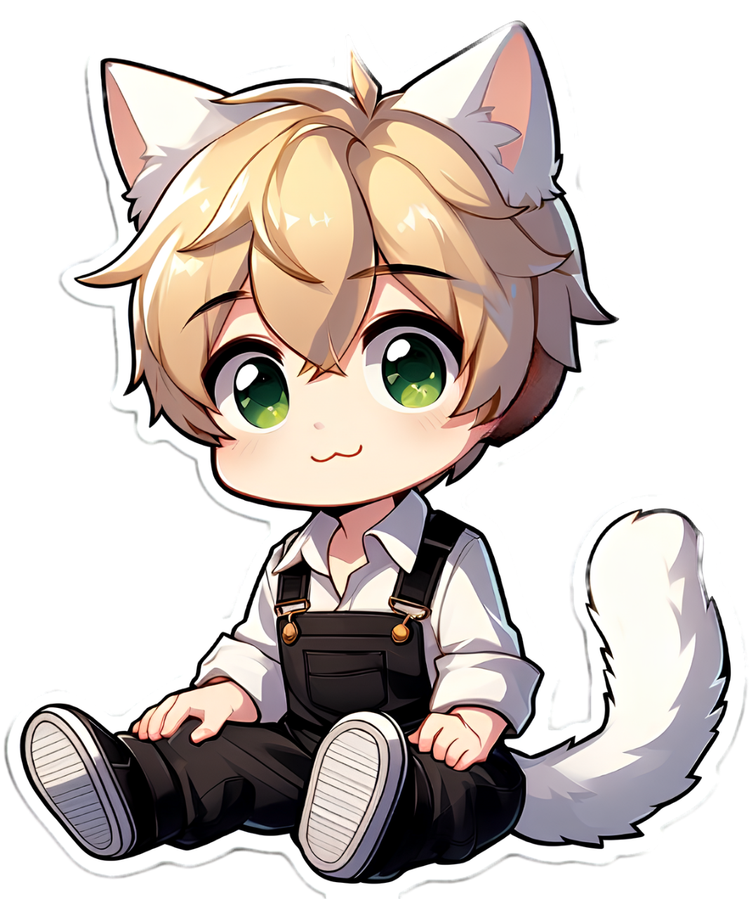
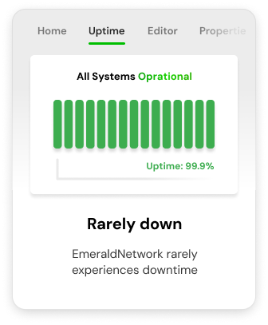
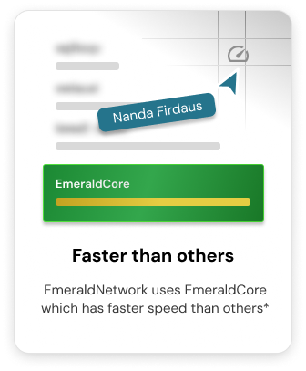
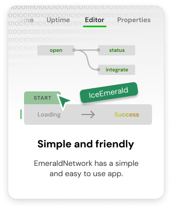
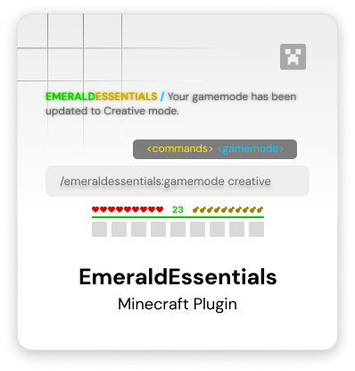
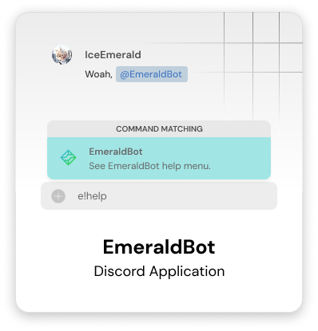
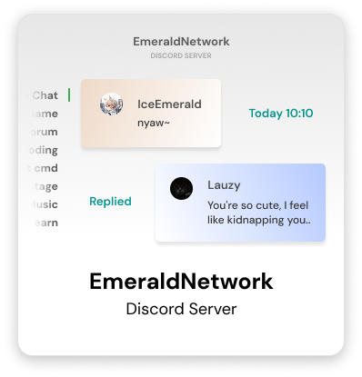
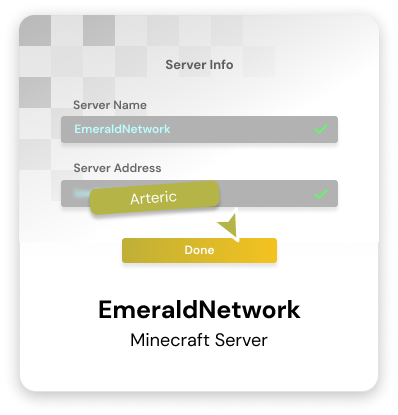
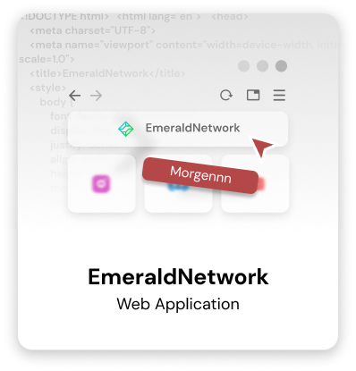

EmeraldNetwork
Welcome to the EmeraldNetwork website, home to applications or files created by IceEmerald and developed with love.
Supporting these platforms:
About EmeraldNetwork
EmeraldNetwork is a growing ecosystem built by IceEmerald, designed to deliver innovative, user-friendly solutions like EmeraldEssentials — all tailored for performance, reliability, and community empowerment.


About IceEmerald
IceEmerald is a creative catboy and content creator, founder of EmeraldNetwork — a platform for apps, Minecraft plugins, Discord bots, and more. Blending playful charm with technical skill, he also shares videos, art, and stories on YouTube and Instagram.
Why EmeraldNetwork?



* Comparing EmeraldCore with others and the results prove that EmeraldCore has faster and more efficient performance.
Trusted by 35.000+ People
EmeraldNetwork was founded by IceEmerald with the aim of creating a comfortable and easy-to-use place or apps for everyone.




